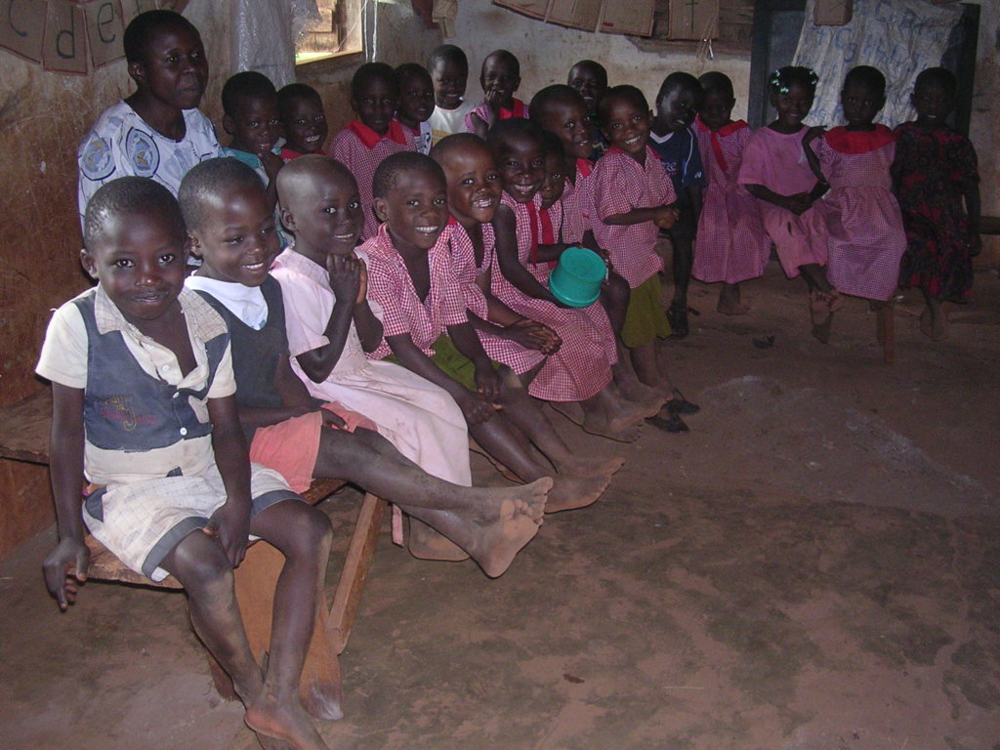

Our Photo & Video Gallery
Explore photographs and videos documenting All God's Children Foundation's work in education, safe water access, water-safety awareness, and community support in Uganda.
Community Borehole Construction and Safe Water Access
These photographs document key stages of the community borehole project, from the initial digging and drilling work through pump installation and construction to the community handover. They illustrate the work involved in improving access to water.

Manual Digging
The initial digging work marked an early stage in the community borehole construction process.

Borehole Drilling
Drilling formed part of the work to develop the borehole and establish access to the underground water source.

Pump Installation
Pump installation was a key stage in preparing the borehole for water collection.

Borehole Top Construction
Construction of the borehole top helped complete the visible structure around the water point.

Community Handover
The handover marked an important milestone in the community's access to the borehole water point.
Education and Community Activities
A selection of photographs from educational and community activities connected to AGCF's work with children and families.

Learning Together
Education is central to helping children develop their knowledge, confidence, and opportunities.

Preparing Learning Materials
School supplies help children prepare for classroom learning and participate in their education.

Learning and Encouragement
Encouragement and mentorship can help children build confidence and work towards their goals.

School Supplies
Essential learning materials support children's participation in school.

Community Learning
Community activities create opportunities for shared learning and engagement.

Agriculture and Sustainability
Agriculture can provide opportunities to explore community livelihoods and sustainable practices.

Community Support
Community participation helps build stronger support for children's wellbeing.
Our Work in Motion
Watch the video below for additional moments from community activities and AGCF's work.
Community Activities
Video highlights provide another way to see activities and initiatives connected to AGCF's mission.
Help Us Create More Opportunities for Children
Join us in supporting children's education, safer communities, and access to essential resources.
Get Involved Support AGCF